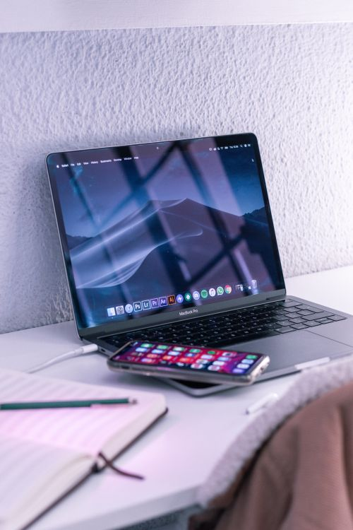

How to Transfer Photos from Phone to Laptop
Three reliable ways, from fastest to most convenient: a cable, a cloud service, or a USB drive. Pick the one that matches how many photos you have and how good your internet is.

Way 1: USB cable (fastest for large batches)
Android to Windows or Mac
- Connect the phone to the laptop with a USB cable.
- On the phone, a notification appears about the USB connection. Tap it and choose "File transfer" (sometimes called MTP). If you skip this, the laptop may only see the phone as a charger.
- On Windows, open File Explorer and find the phone under Devices. On Mac, use the Android File Transfer app or your preferred file tool.
- Open the DCIM folder (and Pictures for screenshots), select the photos, and copy — don't move — them to a folder on the laptop.
- Wait for the copy to finish, open a few photos on the laptop to confirm, and only then delete anything from the phone.
iPhone to Windows or Mac
- Connect the iPhone with a cable and tap Trust on the phone when asked.
- On Mac, open Photos (or Finder on newer versions) and import from the iPhone.
- On Windows, open Photos and choose Import > From a connected device, then select the iPhone.
- Copy first, verify, then delete — same rule as above.
Copy, don't move. If a transfer is interrupted, a "move" can leave you with photos in neither place. Copying keeps the originals safe until you've confirmed the laptop copies open properly.
Way 2: Cloud service (easiest for ongoing sync)
- Make sure the photos are backed up: on Android, Google Photos > backup on; on iPhone, Settings > your name > iCloud > Photos > Sync.
- On the laptop, open the same service in a browser (the Google Photos website or the iCloud website) and sign in to the same account.
- Select photos or albums and click Download.
Cloud transfer needs decent internet and enough free storage in the account. For hundreds of large videos, the cable is usually faster. Also note: downloading from a cloud service gives you the stored version — if the service compressed your photos, the download matches that stored quality.
Way 3: USB drive (no internet needed)
- Copy photos from the phone to a USB drive using a USB-C or Lightning adapter (often called an OTG adapter) and your phone's Files app — or copy from the phone to the laptop first, then to the drive.
- Plug the drive into the laptop and copy the files across.
- Eject the drive properly before unplugging it.
This is the best option when internet is slow or unavailable, and it doubles as a backup if you keep the drive somewhere safe.
After the transfer: organise once, benefit forever
- Name folders by year and event ("2026 - Family trip") instead of leaving everything in one giant folder.
- Delete obvious duplicates and blurry shots after confirming the transfer.
- Consider a second copy somewhere else — a laptop plus a cloud account, or a laptop plus a USB drive. One copy is not a backup; two copies in different places is.